上一个帖子介绍了新华门事件的始末。此事发生后仅仅一天，就到了给老胡开追悼会的日子。所以，今天就来介绍一下4月22日的两场追悼会——人民大会堂的官方追悼会和广场上的民间追悼会。
由于4月20日刚刚发生了新华门事件，党国很担心追悼会期间发生啥意外。毕竟老胡的追悼会是大场面，有党政军各界的显贵出席，还有中外记者现场报道。一旦出现意外，则党国的颜面无存。所以，朝廷采取如下的防范措施。
在追悼会的前几天，北京市公安局就宣布了22日的交通管制通告。
仅仅搞交通管制，显然是不够滴。为了防止前一天的新华门事件重演，朝廷决定：在重要地段（中南海、人民大会堂、长安街、等），派重兵把守。但是北京公安局没有这么多警力。所以，朝廷决定调北京军区的正规军入驻。据《关键时刻——李鹏日记》记载：
所谓上有政策，下有对策。针对朝廷的上述举动，学生们采取了如下的应对措施。
22日的官方追悼会，是早就订下日期的。很多学生都想在22日那天，到广场上去给老胡的遗体告别。但是北京有几十所高校，如果各自为战，很容易发生混乱，给官方留下话柄。
在这之前，很多学校已经成立了【民间性质】的学生组织（所谓民间性质，是指有别于官方的“学生会”）。到了21日那天，十几所高校的学生组织代表，齐聚北大28号楼开会，成立了“北京高校行动委员会”。这是六四期间，第一个【跨学校】的民间学生组织。该组织就是后来“北高联”（又称“高自联”）的前身。在整个“六四学运”中，北高联发挥了很大的作用。
为了规避交通管制，“北京高校行动委员会”决定，在21日晚提前进入广场。话说这个委员会的效率还是挺高的。成立不到12小时，北京的大部分高校都贴出了该委员会的通告，通知学生们在当天晚上，去北师大举行“誓师大会”，通告还要求参加的同学穿球鞋，带好水和干粮。
到了傍晚时分，各大高校的学生纷纷出动，齐聚北师大。誓师大会由学生领袖吾尔开希主持（吾尔开希因为在前一天的新华门事件中，带头喊口号而出名）。他在会上控诉了新华门的暴力事件，并介绍了22日游行的路线安排和目的。
誓师大会之后，几万名学生浩浩荡荡地从北师大走到广场。由于很多高校都组织了专门的纠察队，佩戴红袖标，在游行队伍中维持秩序。几万人的游行队伍，秩序井然。
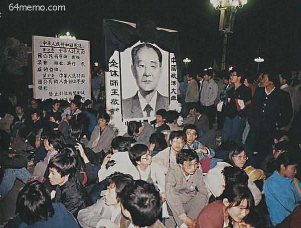
（政法大学的队伍特意举了块木牌，上面写着宪法第35条、37条、41条——关于“游行、集会、结社”的自由）
到了广场后，各个高校按照事先划定的区域，排成方阵坐好。然后，大家默默地等待天亮。
广场上的每个方阵，都用自己的校旗作标识，纠察队在方阵外边维持秩序。进出方阵的人，都要出示学生证给纠察队员看。为啥要搞这么严格捏？主要是担心党国的便衣混到学生队伍中，乘机捣乱，然后栽赃给学生。
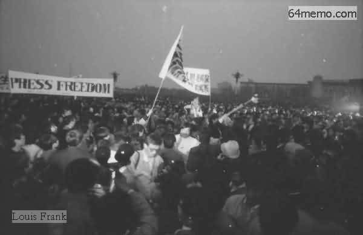
（半夜时分的广场）
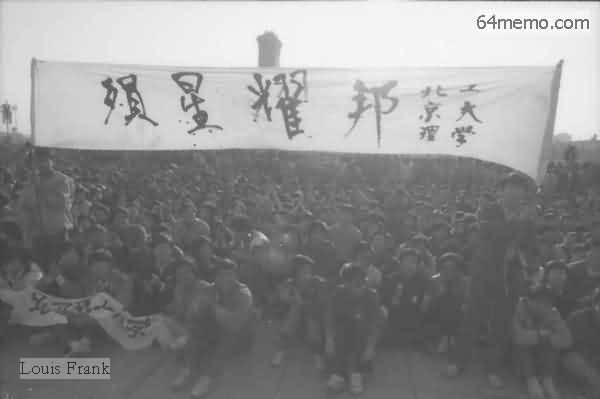
（黎明时分的广场）
俺已经不止一次地提到：伟光正是一个等级很森严的组织。在这样的组织里，自然非常重视死后的盖棺定论（如果你还不懂得其中的奥妙，一定要先看一下《如何解读朝廷要员的盖棺定论？》）。所以，俺再费点口水，说说老胡追悼会的规格问题。
首先，老胡是个非常特殊的政治人物。体现在如下：
1. 他是伟光正的前任总书记
2. 他具有很高的民望（不妨回顾一下《废帝胡耀邦其人》）
3. 他身处朝廷权力斗争的漩涡中心——改革派官员极力捧他，保守派官员极力贬他
4. 他恰巧在一个特殊的年份去世（在《山雨欲来的1989年》，俺解释了那年的特殊之处）。
基于上述原因，使得老胡的悼词，变成一个很棘手的两难问题——如果悼词的规格太低，无疑会激怒广大的学生和群众（俺前面介绍过，老胡的民望很高）；如果规格太高，那当初为啥还要罢免他捏？（陷入自相矛盾，无法自圆其说）
在老胡去世当天，裆中央就为了讣告的用词而再三拖延（上午7点去世，拖到晚上6点半才发讣告）。当时的讣告中【没有】“马克思主义者”的头衔（关于此头衔的重要性，请看《如何解读朝廷要员的盖棺定论？》）。
到了22日的追悼会，赵紫阳念的悼词是这样滴：
据《李鹏日记》记载：
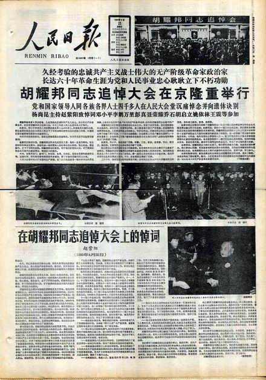
（22日当天《日人民报》的头版）
说完悼词，再稍微聊一下那天出席追悼会的各种人物。
主持追悼会的，是当时的国家主席杨尚昆。虽然国家主席是个虚职（也就是花瓶），但是名头还是很大滴。由国家主席主持追悼会，说明规格很高。
由总书记老赵亲自念悼词，也算是给老胡家属足够的面子。前面的帖子介绍过，老赵跟老胡一样，都是改革派的骨干。
其它出席追悼会的朝廷大员，还包括：所有的政治局常委；党国“八元老”中的老邓、李先念、王震等人。但是，陈云作为朝廷第二号实权人物兼保守派的头目，称病没有到场（摆明了故意不给面子）。
（邓小平走过胡耀邦的遗体）
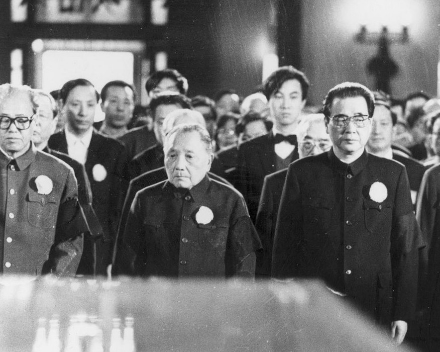
（站在胡耀邦遗体前面的三个朝廷大佬：矮邓居中，左边是赵紫阳，右边是李鹏）
综上所述，老胡追悼会的规格，还是挺高滴。但是广场上的大学生依然不满意。为啥捏？因为悼词中，只字不提“反资产阶级自由化”的那档子事儿。当年老胡被废黜，主要的理由就是：“反资产阶级自由化”不力。如今悼词不提此事，说明裆中央压根儿没打算给老胡平反。
说完大会堂的官方追悼会，再来说说广场上的民间追悼会。
前面提到，几万名学生在前一天夜里就坐在广场上，就是为了等第二天的追悼会，并给老胡的遗体送行。等到北京公安局发现大量学生在夜里涌入广场，已经来不及阻止。到了第二天天亮，虽然有大批正规部队在广场和大会堂周边警戒，但以当时的兵力（约1千人左右），不可能在广场上实施清场。
这种情况下，官方只好跟学生谈判。官方要求学生在大会堂门口，让出一条30米宽的通道，以方便参加追悼会的车辆通行；作为交换，官方在广场上架设高音喇叭，进行追悼会的实况转播。学生代表同意了这些条件。
谈判完之后，几万学生在几分钟内，就整齐地平移30米，空出了通道。
党国方面，比较担心“新华门事件”重演。所以在学生空出通道之后，马上调大批军人在大会堂门口布置了多重警戒线。主要目的就是防止学生冲击大会堂。为了避免引起学生的敌对情绪，这些军人都没带武器。
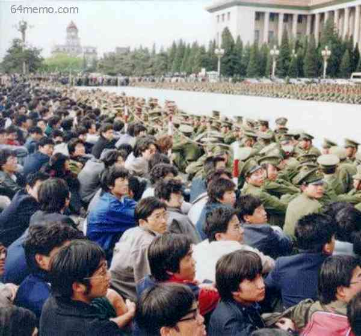
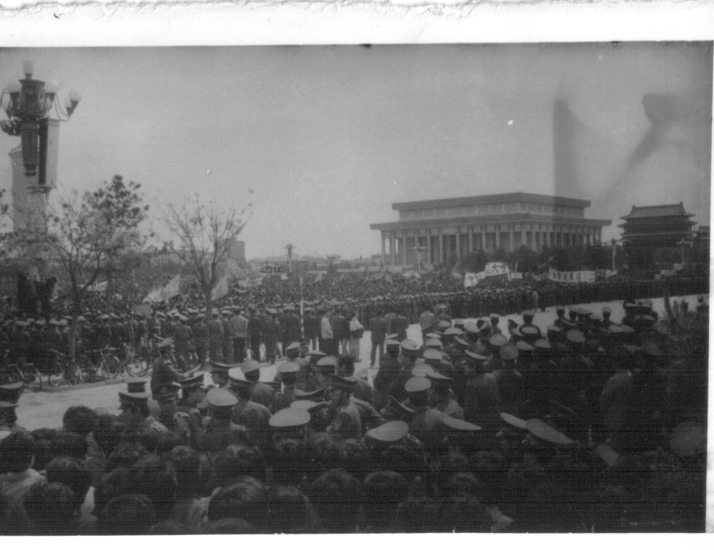
上午10点，追悼会准时开始。广场上的学生都安静地听着高音喇叭的实况直播。
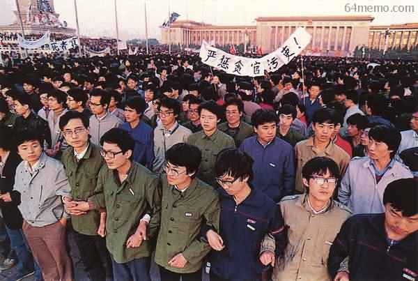
（横幅标语：
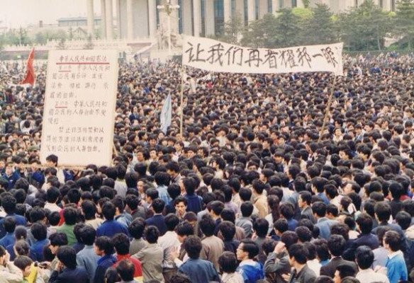
（横幅标语：
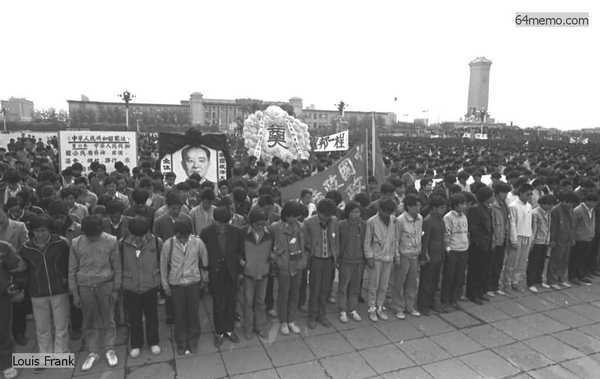
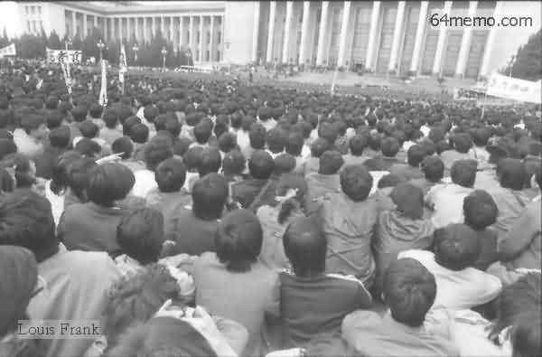
当追悼会接近尾声的时候，大会堂外的学生再次要求李鹏出来对话。但是李鹏犹如癞蛤蟆吃秤砣——铁了心，就是不出来见面。
当时的学生领袖之一吾尔开希对李鹏的态度十分愤怒，主张冲进大会堂；但另一个学生领袖张伯笠不同意。他俩的对话如下（摘自张伯笠的回忆录——《逃亡者》）：
三个人跪了超过45分钟，没有任何朝廷的官员出来见个面，表个态。
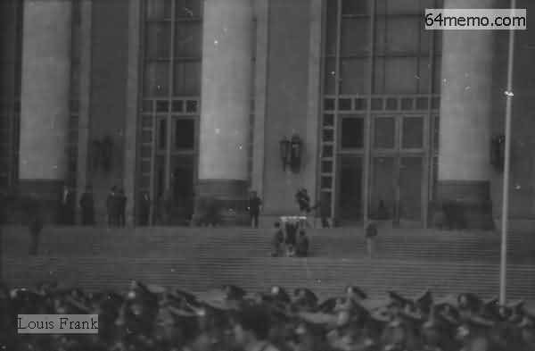
（郭海峰、周勇军、张志勇3人跪在人民大会堂的台阶上）
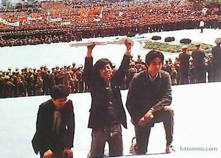
（郭海峰、周勇军、张志勇3人的正面近照）
看了上面这几张照片，不知列位看官有何感想？为什么一个号称代表最广大民众利益的执政党，却不敢（或不愿）出来跟学生代表见个面。
再说了，学生们提的要求并不过分。如果你看过前面的帖子《4月18日，从悼念到请愿》，自然就明白：学生们的要求，充其量只是改良。
那天，有些名气大的知识分子，也在大会堂参加追悼会。他们看到了广场上的一幕，不禁感慨万千。
知名的改革派杂志《新观察》的主编戈扬女士，当场作了一首诗：
除了戈扬，还有一些在场的知识分子，也评论了两场追悼会的迥异。
官方的《科技日报》副总编孙长江含蓄地说：
（编程随想注：《科技日报》是当时少数几家敢为学生说话的官方报纸。追悼会之后，官方的《人民日报》、《光明日报》等报刊压根儿没提学生在广场上的悼念。而《科技日报》却刊出长篇报道《风一程，雨一程，长歌当哭送君行》）
香港某杂志总编李怡评价说：
最后来说说俺的几点看法。
关于那天的追悼会，学生们抱有过高的期望。不少人以为：官方的悼词会为老胡的“资产阶级自由化”错误进行平反。
实际上捏，在当时的朝廷中，邓太上皇握有实权，是真正的一把手（关于当时的权力格局，请看“本系列第1篇”的介绍）。而“资产阶级自由化”这个说法，是老邓反复强调滴。所以，只要太上皇不死，老胡的资产阶级自由化问题，就不可能平反。
下跪请愿发生后，很多人都指责李鹏是缩头乌龟。但是捏，你如果换位思考一下，会发现：小李不出面，实在是情理之中。这个家伙作为保守派，巴不得学生跟政府的矛盾激化。这样一来，就可以重演86学潮那一幕——借学潮扳倒总书记。那他这个总理就有望更上一层楼。
列位看官反而该想想：为啥没有改革派的官员（包括赵紫阳）出来安抚学生？俺觉得有两个原因：
1. 改革派很可能低估了学生的情绪——他们以为追悼会结束后，学生的悼念活动也会跟着消停。
2. 改革派如果出来安抚学生，会被保守派官员抓住把柄，说他们对学生太温和太软弱（“八六学潮”的时候，胡总书记就被保守派指责：对学生太软弱）。
回到本系列的目录
★追悼会前，朝廷的预防措施
由于4月20日刚刚发生了新华门事件，党国很担心追悼会期间发生啥意外。毕竟老胡的追悼会是大场面，有党政军各界的显贵出席，还有中外记者现场报道。一旦出现意外，则党国的颜面无存。所以，朝廷采取如下的防范措施。
◇交通管制
在追悼会的前几天，北京市公安局就宣布了22日的交通管制通告。
为了保障4月22日上午胡耀邦同志追悼大会顺利进行，现将天安门地区的交通管制措施通告如下：交通管制的目的很明显，就是要阻止学生进入广场搞悼念活动。
1、四月二十二日上午八时至十二时，天安门广场及大会堂西侧路，除持有大会车证的车辆外，禁止其它各种车辆和行人通行。
2、四月二十二日上午八时半至十二时，南河沿南口以西，府右街南口以东天安门广场东侧路，除允许公交车甩站通过和持有大会车证的车辆通行外，禁止其它各种车辆通行。
◇调兵入京
仅仅搞交通管制，显然是不够滴。为了防止前一天的新华门事件重演，朝廷决定：在重要地段（中南海、人民大会堂、长安街、等），派重兵把守。但是北京公安局没有这么多警力。所以，朝廷决定调北京军区的正规军入驻。据《关键时刻——李鹏日记》记载：
21日晚，杨尚昆（军委副主席兼军委秘书长）下令紧急从北京军区调兵进驻北京。从驻防在保定的38军的两个机械化师中抽调1500名兵力，日夜兼程，赶赴北京。一个团进驻中南海，其余兵力布置在中南海四周，保卫中央首脑机关的安全。这应该是六四期间，朝廷【第一次】调正规军进入帝都。
★追悼会之前，学生的应对措施
所谓上有政策，下有对策。针对朝廷的上述举动，学生们采取了如下的应对措施。
◇成立联合学生组织
22日的官方追悼会，是早就订下日期的。很多学生都想在22日那天，到广场上去给老胡的遗体告别。但是北京有几十所高校，如果各自为战，很容易发生混乱，给官方留下话柄。
在这之前，很多学校已经成立了【民间性质】的学生组织（所谓民间性质，是指有别于官方的“学生会”）。到了21日那天，十几所高校的学生组织代表，齐聚北大28号楼开会，成立了“北京高校行动委员会”。这是六四期间，第一个【跨学校】的民间学生组织。该组织就是后来“北高联”（又称“高自联”）的前身。在整个“六四学运”中，北高联发挥了很大的作用。
为了规避交通管制，“北京高校行动委员会”决定，在21日晚提前进入广场。话说这个委员会的效率还是挺高的。成立不到12小时，北京的大部分高校都贴出了该委员会的通告，通知学生们在当天晚上，去北师大举行“誓师大会”，通告还要求参加的同学穿球鞋，带好水和干粮。
◇提前集结广场
到了傍晚时分，各大高校的学生纷纷出动，齐聚北师大。誓师大会由学生领袖吾尔开希主持（吾尔开希因为在前一天的新华门事件中，带头喊口号而出名）。他在会上控诉了新华门的暴力事件，并介绍了22日游行的路线安排和目的。
誓师大会之后，几万名学生浩浩荡荡地从北师大走到广场。由于很多高校都组织了专门的纠察队，佩戴红袖标，在游行队伍中维持秩序。几万人的游行队伍，秩序井然。
（政法大学的队伍特意举了块木牌，上面写着宪法第35条、37条、41条——关于“游行、集会、结社”的自由）
到了广场后，各个高校按照事先划定的区域，排成方阵坐好。然后，大家默默地等待天亮。
广场上的每个方阵，都用自己的校旗作标识，纠察队在方阵外边维持秩序。进出方阵的人，都要出示学生证给纠察队员看。为啥要搞这么严格捏？主要是担心党国的便衣混到学生队伍中，乘机捣乱，然后栽赃给学生。
（半夜时分的广场）
（黎明时分的广场）
★官方的追悼会
俺已经不止一次地提到：伟光正是一个等级很森严的组织。在这样的组织里，自然非常重视死后的盖棺定论（如果你还不懂得其中的奥妙，一定要先看一下《如何解读朝廷要员的盖棺定论？》）。所以，俺再费点口水，说说老胡追悼会的规格问题。
◇老胡的特殊之处
首先，老胡是个非常特殊的政治人物。体现在如下：
1. 他是伟光正的前任总书记
2. 他具有很高的民望（不妨回顾一下《废帝胡耀邦其人》）
3. 他身处朝廷权力斗争的漩涡中心——改革派官员极力捧他，保守派官员极力贬他
4. 他恰巧在一个特殊的年份去世（在《山雨欲来的1989年》，俺解释了那年的特殊之处）。
◇悼词的微妙之处
基于上述原因，使得老胡的悼词，变成一个很棘手的两难问题——如果悼词的规格太低，无疑会激怒广大的学生和群众（俺前面介绍过，老胡的民望很高）；如果规格太高，那当初为啥还要罢免他捏？（陷入自相矛盾，无法自圆其说）
在老胡去世当天，裆中央就为了讣告的用词而再三拖延（上午7点去世，拖到晚上6点半才发讣告）。当时的讣告中【没有】“马克思主义者”的头衔（关于此头衔的重要性，请看《如何解读朝廷要员的盖棺定论？》）。
到了22日的追悼会，赵紫阳念的悼词是这样滴：
同志们：在悼词的第一段，关于老胡的头衔，同讣告是一字不差。不过捏，在第二段开头（请注意俺标粗体的地方），额外加了一个“马克思主义者”的头衔，但是又没有加定语（比如：伟大的、杰出的、优秀的......），有点不伦不类。这在党国历史上，是绝无仅有滴。
今天，我们怀着极沉痛的心情，悼念久经考验的忠诚的共产主义战士，伟大的无产阶级革命家、政治家，我军杰出的政治工作者，长期担任党的重要领导职务的卓越领导人胡耀邦同志。
胡耀邦同志作为马克思主义者，他的一生是光辉的。在长达六十年的革命生涯中，他始终如一地对党和人民的事业忠心耿耿、呕心沥血、艰苦奋斗，立下了不朽的功勋......
（后面省略，悼词全文在“这里”）
据《李鹏日记》记载：
（21日）今晚7时，赵紫阳召开常委会，讨论中央对耀邦同志的悼词。中央的悼词对耀邦同志的一生给予很高的评价，但是根据小平同志意见，没有给予耀邦同志“伟大的马克思主义者”的称号。看来，邓太上皇比较记仇，对老胡依然耿耿于怀，所以才不肯抬高老胡的头衔，最终搞出这么一个不伦不类的说法。
（22日当天《日人民报》的头版）
◇哪些人出席追悼会
说完悼词，再稍微聊一下那天出席追悼会的各种人物。
主持追悼会的，是当时的国家主席杨尚昆。虽然国家主席是个虚职（也就是花瓶），但是名头还是很大滴。由国家主席主持追悼会，说明规格很高。
由总书记老赵亲自念悼词，也算是给老胡家属足够的面子。前面的帖子介绍过，老赵跟老胡一样，都是改革派的骨干。
其它出席追悼会的朝廷大员，还包括：所有的政治局常委；党国“八元老”中的老邓、李先念、王震等人。但是，陈云作为朝廷第二号实权人物兼保守派的头目，称病没有到场（摆明了故意不给面子）。
（邓小平走过胡耀邦的遗体）
（站在胡耀邦遗体前面的三个朝廷大佬：矮邓居中，左边是赵紫阳，右边是李鹏）
◇总结
综上所述，老胡追悼会的规格，还是挺高滴。但是广场上的大学生依然不满意。为啥捏？因为悼词中，只字不提“反资产阶级自由化”的那档子事儿。当年老胡被废黜，主要的理由就是：“反资产阶级自由化”不力。如今悼词不提此事，说明裆中央压根儿没打算给老胡平反。
★民间的追悼会
说完大会堂的官方追悼会，再来说说广场上的民间追悼会。
◇官方和学生谈判
前面提到，几万名学生在前一天夜里就坐在广场上，就是为了等第二天的追悼会，并给老胡的遗体送行。等到北京公安局发现大量学生在夜里涌入广场，已经来不及阻止。到了第二天天亮，虽然有大批正规部队在广场和大会堂周边警戒，但以当时的兵力（约1千人左右），不可能在广场上实施清场。
这种情况下，官方只好跟学生谈判。官方要求学生在大会堂门口，让出一条30米宽的通道，以方便参加追悼会的车辆通行；作为交换，官方在广场上架设高音喇叭，进行追悼会的实况转播。学生代表同意了这些条件。
谈判完之后，几万学生在几分钟内，就整齐地平移30米，空出了通道。
党国方面，比较担心“新华门事件”重演。所以在学生空出通道之后，马上调大批军人在大会堂门口布置了多重警戒线。主要目的就是防止学生冲击大会堂。为了避免引起学生的敌对情绪，这些军人都没带武器。
◇学生静听追悼会转播
上午10点，追悼会准时开始。广场上的学生都安静地听着高音喇叭的实况直播。
（横幅标语：
严惩贪官污吏）
（横幅标语：
让我们再看耀邦一眼）
◇学生代表下跪请愿
当追悼会接近尾声的时候，大会堂外的学生再次要求李鹏出来对话。但是李鹏犹如癞蛤蟆吃秤砣——铁了心，就是不出来见面。
当时的学生领袖之一吾尔开希对李鹏的态度十分愤怒，主张冲进大会堂；但另一个学生领袖张伯笠不同意。他俩的对话如下（摘自张伯笠的回忆录——《逃亡者》）：
张伯笠：然后，郭海峰自告奋勇，拿着请愿书去大会堂门口下跪（4月18日的第一次请愿，也是郭海峰去的）。另两个学生领袖周勇军、张志勇也跟着一起去。三个人就跪在大会堂正门的国徽之下。双手高举请愿书。当时的广场上，所有看到这一幕的学生和市民，都被震惊了。
我们不能给政府以口实，在美国那样民主的国家也不可以冲进国会，况且今天又是耀邦的追悼大会。
吾尔开希：
那怎么办？难道就这样收场？你心甘情愿？
张伯笠：
把我们的请愿书递上去，如他们不接，那就面对国徽长跪不起，把这个政府钉在历史的耻辱柱上！
吾尔开希：
我不同意，我们不能给统治者下跪！
张伯笠：
我们什么时候站起来过？四十年了，哪一个中国人堂堂正正地站起来过！
三个人跪了超过45分钟，没有任何朝廷的官员出来见个面，表个态。
（郭海峰、周勇军、张志勇3人跪在人民大会堂的台阶上）
（郭海峰、周勇军、张志勇3人的正面近照）
看了上面这几张照片，不知列位看官有何感想？为什么一个号称代表最广大民众利益的执政党，却不敢（或不愿）出来跟学生代表见个面。
再说了，学生们提的要求并不过分。如果你看过前面的帖子《4月18日，从悼念到请愿》，自然就明白：学生们的要求，充其量只是改良。
★两场追悼会的对比
那天，有些名气大的知识分子，也在大会堂参加追悼会。他们看到了广场上的一幕，不禁感慨万千。
知名的改革派杂志《新观察》的主编戈扬女士，当场作了一首诗：
一片土地分成两边，中间隔着暴力的墙。顺便说一下：当军队在一个多月后进行血腥屠杀，作为老党员的戈扬宣布退党，她公开宣称：
这边是冷漠的冰山，那边是真情的海洋。
耀邦的尸体在这边，耀邦的灵魂在那边。
我们都是来自那边，没有那边哪有这边？
我们当年参加的共产党，不是现在的这个党。我要和这个镇压人民的党决裂！
除了戈扬，还有一些在场的知识分子，也评论了两场追悼会的迥异。
官方的《科技日报》副总编孙长江含蓄地说：
今天，北京有两个追悼胡耀邦同志的地方，一个在人民大会堂内，一个在人民大会堂外。这两个地方我都参加。我感到前者太小太小，而后者太大太大......
（编程随想注：《科技日报》是当时少数几家敢为学生说话的官方报纸。追悼会之后，官方的《人民日报》、《光明日报》等报刊压根儿没提学生在广场上的悼念。而《科技日报》却刊出长篇报道《风一程，雨一程，长歌当哭送君行》）
香港某杂志总编李怡评价说：
大会堂内，高度赞扬了胡耀邦的一生，唯独回避了87年1月他下台的事......
大会堂外，则紧紧盯着87年1月的事情，要求为当时的决定平反......
大会堂内，强调胡对党的忠心耿耿，强调他顾全大局......
大会堂外，则强调他自由、开放、宽松的政策，强调他两年前遭受的不公正待遇以及他两年来的沉默......
★俺的点评
最后来说说俺的几点看法。
◇学生的期望过高
关于那天的追悼会，学生们抱有过高的期望。不少人以为：官方的悼词会为老胡的“资产阶级自由化”错误进行平反。
实际上捏，在当时的朝廷中，邓太上皇握有实权，是真正的一把手（关于当时的权力格局，请看“本系列第1篇”的介绍）。而“资产阶级自由化”这个说法，是老邓反复强调滴。所以，只要太上皇不死，老胡的资产阶级自由化问题，就不可能平反。
◇改革派应对失策
下跪请愿发生后，很多人都指责李鹏是缩头乌龟。但是捏，你如果换位思考一下，会发现：小李不出面，实在是情理之中。这个家伙作为保守派，巴不得学生跟政府的矛盾激化。这样一来，就可以重演86学潮那一幕——借学潮扳倒总书记。那他这个总理就有望更上一层楼。
列位看官反而该想想：为啥没有改革派的官员（包括赵紫阳）出来安抚学生？俺觉得有两个原因：
1. 改革派很可能低估了学生的情绪——他们以为追悼会结束后，学生的悼念活动也会跟着消停。
2. 改革派如果出来安抚学生，会被保守派官员抓住把柄，说他们对学生太温和太软弱（“八六学潮”的时候，胡总书记就被保守派指责：对学生太软弱）。
回到本系列的目录
版权声明
本博客所有的原创文章，作者皆保留版权。转载必须包含本声明，保持本文完整，并以超链接形式注明作者编程随想和本文原始地址：
https://program-think.blogspot.com/2012/03/june-fourth-incident-14.html
本博客所有的原创文章，作者皆保留版权。转载必须包含本声明，保持本文完整，并以超链接形式注明作者编程随想和本文原始地址：
https://program-think.blogspot.com/2012/03/june-fourth-incident-14.html